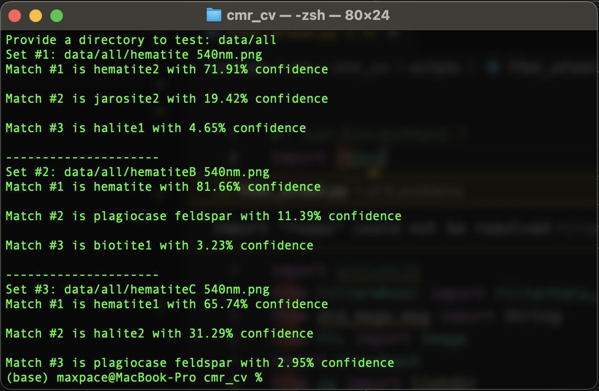

Cornell Mars Rover
I've had the joy of being a part of the Controls Software subteam of Cornell Mars Rover, a credit-bearing project team of over 50 engineers dedicated to producing a semi-autonomous rover to compete anually in the University Rover Challenge. My focus has been primarily on the vision-based systems of the rover with some work on its operating system and drive controls. I was happily chosen to drive the rover in competition in 2023.


Keyboard Detection
In the equipment servicing mission, the rover is tasked with operating a control panel, which includes the subtask of typing on a keyboard. The rover's arm is a 12 joint system, which is difficult to control precisely enough to efficiently operate the keyboard.
I designed a program utilizing the camera on the rover's mast to identify and segment the keyboard, apply a homography and enhance the enhance the image for human visibility, and then allow the operator to click on a key in the image for the rover to maneuver to via inverse kinematics.
Ensuring robustness of the keyboard segmentation and corner detection proved to be the primary challenge in this project. After experimenting with a variety of segmentation models (including testing various thresholding techniques and training my own models), I eventually found best success, measured as a comparison of accuracy and execution time, with Model Zoo's ResNet-50 RCNN. Corner detection also proved inconsistent without modifying the segmented image, but the program was made more robust through a combination blurring, adaptive thresholding, eroding, and dilating.
Mineral Classification
As part of the science mission, the rover used to look at rocks under various light filters from a filter wheel. The team was challenged to identify the rocks.
This program aided the team in identifying the rocks to serve as an extra measurement of confidence in our prediction and help break any ties in potential candidates. I implemented the classifier using the K-Nearest Neighbors algorithm due to the extremely small dataset we had access to. The dataset limited the choice of algorithm and prevented the use of more complex models. Nevertheless, I was able to see a much higher degree of success (by 70% in validation accuracy) than the prior attempt at an implementation.
Sadly, the tool was never used in competition as the filter wheel was scrapped and competition requirements changed. Nevertheless, the reimplementation was an overall success and an exciting project to work on.
Synopsis
In August, 2022, my roommate Daniel and I pitched an idea for a personalized industry news report to the directors of eLab, a credit-bearing and funding-providing startup accelerator at Cornell. We were delighted to be receive an invitation to join the Fall 2022 cohort, which we hastily accepted. For a semester, we spent time fleshing out our idea, developing and revising a formal business model, conducting over 50 customer discovery interviews, and learning about the fundamentals of entrepreuership. In October, we gave a 2 minute pitch in Manhattan publicly introducing our idea and our progress, connecting ourselves with several viewers who were able to provide further advice and mentorship. Throughout the semester, our idea began to morph into a dashboard for on-demand queries about current trends in the industry and news finding for immediate email responses.
In December, we were convinced of the potential of our idea, and we received another invitation to continue our progress in the Spring 2023 cohort. This semester provided us with siginificantly more mentorship and connected us with advisors who have been instrumental in our progress and idea refinement. Course content focused more heavily on some of the post-ideation aspects of forming a company, and we were provided $5,000 in funding. The program also gave us the opportunity to pitch in San Fransisco at the Cornell Silicon Valley event as well as at eLab's Demo Day on campus.
By the end of the semester, we shifted our focus to a more immediate plan for helping executives save time. This involved allowing users to provide an email from investors or other important contacts asking about an event or trend, finding relevant news, and providing a draft response with proper sources. After further discussion with advisors and some talks with directors at Y Combinator, we decided to take on a major pivot, focusing instead on data science presentations and improving how engaging and story-like they can be.
Our progress today continues around this idea of data science presentations, and our progress is ongoing. We are currently finalizing our product for deployment by end of February, 2024.
Flappy Bird AI
While studying Robot Learning in CS 4756, I worked on a reinforcement learning research project with two partners. We chose to build an AI for the beloved game of Flappy Bird using Q-Learning. The agent is trained in the FlapPyBird gym environment, where it can be queried for an action every frame.
Our first model was trained using a lookup table for each possible state-action pair updated every frame according to the Bellman Equation. Since the game's states are mostly continuous, we discretized the states enough to allow the agent to update all possible states frequently enough while also preserving enough information to make an informed action. At any given frame, the bird can choose to jump or continue its trajectory, which decides its action space.
A fairly simple reward structure proved successful, where the bird was simply penalized at its death. Applying the punishment at the correct time was slightly more tricky, since some actions caused inevitable deaths several frames later that the actions in between had no real bearing on. As such, the penalty was applied at the frames just prior to the bird's death if it collided with the ground or a lower pipe since it should have jumped. In the other case of it colliding with an upper pipe, only the bird's final jump was penalized since it is what primarily contributed to the agent's demise.
We found that after training for only 30,000 games, the agent was able to achieve scores over 150; however, training progress after this became exponentially slower, since the majority of states the bird encountered were ones it already was making the correct choice in, and the states it failed in were becoming increasingly rare. To mitigate this, we remodeled the environment to allow the bird to start close to where it died so as to let it learn the correct Q values in those critical states more efficiently. This resulted in the bird being able to reach scores well over a million.
On my own, I was curious if the Q values could be learned as a continuous function without discretzation and utilizing a neural network instead. Upon further reading in Deep Q Networks (DQNs), I attempted to use an architecture employing a set of shared layers fed separately into a value function stream and advantage function stream, which were combined into a Q value. The model was also trained using a target network with weights updated less frequently than the main network.
This model was not as succcessful as the Q-Table. While DQNs can be successful, it is difficult to train a network when the labels are not known and are being guessed by effectively the same network. I still suspect that with further hyperparameter tuning and architecture modifications, a DQN can be trained to generate actions for a succesful Flappy Bird agent.